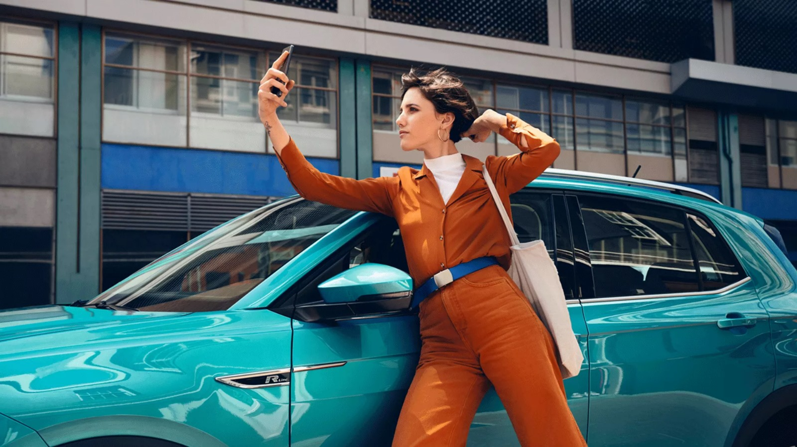

LKSWAGEN
LKSWAGEN
Modeller

Volkswagen Modelleri
Tüm Modeller
Çok az markanın model yelpazesinde bu kadar çok otomotiv efsanesi bulunur. Dünyaya 5 kapılı hatchback kavramını kazandıran Golf, yaklaşık yarım asırdır aynı tasarım prensiplerine sadık kalınarak geliştirilmeye devam eden Polo ve modern Volkswagen dönemini başlatan, prestijli sedan denince akla ilk gelen model olan Passat... SUV modellerin de katılımı ile zenginleşen, eşsiz model yelpazemizi keşfedin ve Volkswagen Dünyasına ilk adımı atın.

SUV Modeller
Tüm Modeller
Volkswagen’in, sayısız Dakar şampiyonluğu ve bir Boeing 747 Jumbo Jet çekerek elde ettiği dünya rekoru bulunan ilk gerçek SUV’si Touareg’in, asfalt ve off-road üzerindeki yaklaşık 20 yıllık deneyimi, artık pek çok modelin altyapısına destek oluyor. Hem şehir içi hem de hafif arazi şartları için ideal sürüş özelliklerine T-Roc, Tiguan ve Tiguan Allspace, birbirinden şık tasarımlarıyla seçim yapmanızı biraz zorlaştırabilir. Neyse ki hepsinin ortak yanı; Volkswagen’in SUV Ailesinin üstünlükleri.
Volkswagen Hakkında Modeller Ve Fiyatlar İletişim Sosyal Medya
İkinci El Araçlar Tüm Modeller Yetkili Satıcı Facebook
Ticari Araçlar SUV Modeller Online Servis Instagram
Satış Sonrası Hizmetler Araç Fiyatları İletişim Ve Destek Twitter
Kampanyalar Aksesuarlar Bilgi Formu Youtube
|